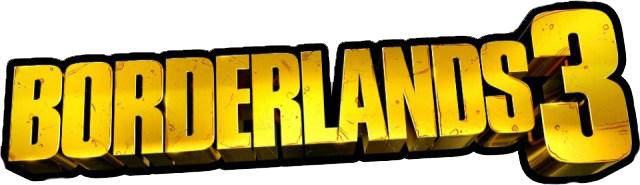

HOP ON THE BORDERLANDS 3 HYPE TRAIN ALL THE WAY TO HYPEVILLE AND KEEP UP WITH THE LATEST B3 TWEETS!!!
These tweets are color coded by the amount of likes they have. White is under 300, green is over 300, blue is over 500, purple is over 700, and the LEGENDARY orange tweets have over 1500.
Check Back in tomorrow to see if any of your tweets made it. Until then, have a bunker busting-ly good day.